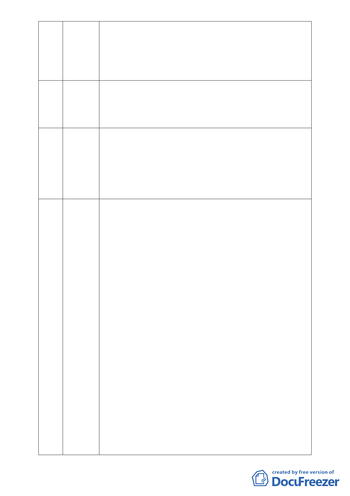

要颱風來時內湖不再有財產的損失、生命仍能存活。也請慈濟用大
愛放手不要再撕裂我們的鄉親，造成雙方人馬的爭執，應就事論事，
慈濟就是開發單位、這個開發就是在保護區、就是會淹水，而我們
就住在這邊。實驗室的模擬並不保證就不會有土石流，請委員審慎
評估。
39 龔朝陽 本人為推廣書畫的學者，今天的專業範疇實在是聽不懂，惟每次下
大雨我就心驚膽跳，深怕家裡淹水以致我的書畫損毀。假如開發案
可以保證本區不淹水則可同意，假如不能保證則希望本區仍為保護
區不宜開發。
40 郭苡儂 本人 22 歲記憶中小時候經歷了二次淹水，家裡也淹掉了一台車，保
護區就是保護區，理當不能蓋建築物，蓋了建築物水出不去就會往
回灌，被灌的就是我們的家園，不希望再體驗ㄧ次被水淹的感覺。
本人不是要反慈濟，只是做愛心為什麼ㄧ定要在這保護區上面呢？
難道不能去其他地方做嗎？希望慈濟和上人都能想清楚，也請委員
做出正確的決定。
41 楊重信
對慈濟申請變更保護區為社會福利特定專用區案之緊急呼籲
楊重信（文化大學景觀學系教授）
（11/11/2010）
本案基地座落於內湖區大湖公園北側之保護區，基地是池塘填土而
成，基地南側與大湖僅是一路之隔、基地西北及東側山坡地均屬於
潛在順向坡，北基地西北隅邊緣有基隆斷層經過、南基地東北側為
地下礦坑開採範圍，此基地不折不扣是一處高度環境敏感地區。慈
濟基金會於民國 86 年購地時明知此基地座落於保護區且其環境敏
感性非常高，根本不適宜從事開發行為，而仍有恃無恐購入土地，
並且自 94 年起一而再、再而三地，仗著宗教勢力，打著「社會福利
旗幟」，企圖掩蓋破壞環境與衝撞台北市保護區政策之事實，強行遊
說台北市政府都市計畫委員同意將該基地變更為「社會福利特定專
用區」，讓其可興建 54,750 平方公尺（約 16,562 坪）之樓地板面積。
本案申請單位慈濟基金會實在是居心不良：明知此基地位於保護區
且基地環境敏感度甚高，不適宜開發，而仍貪圖保護區地價較便宜，
企圖挾宗教勢力強渡關山，摧毀台北市保護區政策，此為存心不良
之一；將基地面積限縮於 5 公頃內，規避環境影響評估，此為存心
不良二；申請開發之樓地板面積高達 54,750 平方公尺（以一般住家
含公設 50 坪計算，相當於 330 戶住宅之規模），此龐大量體不論是
公益設施或私益設施，都一樣會對環境造成無法承受之衝擊，慈濟
基金會以「慈善、社會福利」為由，取得道德制高點，企圖轉移環
境衝擊焦點，弱化都市計畫委員對環境保護之堅持，以蒙混過關，
- 18 -